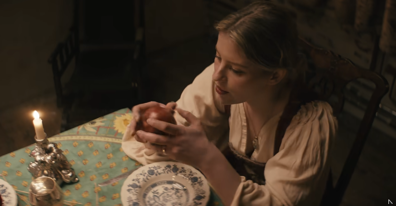

Slide 1: Paris Paloma — An Engaged Artist for Women's Rights
First-Person Testimony, Activism, and the Post-Roe v. Wade Context
1. Speaking in the First Person ("I") & Personal Experience
In "Labour", Paris Paloma writes and sings in the first person, drawing directly from lived female experience. By saying "I", she expresses the intimate psychological and physical exhaustion of a woman trapped in an unequal relationship, turning a personal testimony into a universal anthem shared by millions of women worldwide.
2. An Engaged Singer Fighting for Rights
Born in Derbyshire, England, and trained in Fine Art History at Goldsmiths, University of London, Paris Paloma uses dark folk and literary mythology as tools of feminist activism. Her music denunciates gender inequality, domestic servitude, and systemic violence against women.
3. Social Context: The Aftermath of Overturning Roe v. Wade
Released in March 2023 on her debut album Cacophony, the song was written in the direct political shockwave following the June 2022 U.S. Supreme Court decision to overturn Roe v. Wade. As women's bodily autonomy and reproductive rights were stripped away, Paloma highlighted how society still seeks to reduce women to unpaid domestic servants and forced child-bearers.
Slide 2: Official Music Video & Thematic Study of the Lyrics
Hosted Video & Stanza-by-Stanza Breakdown
Verse 1: Isolation & Unseen Work
The narrator questions why her partner isolates her while she performs endless physical chores alone—tending the orchard, fixing the home, and fetching water—under his emotional mistreatment.
Chorus: Physical Exhaustion
Seeing her burst eye capillaries and cracked hands, she realizes the man she thought was her savior is exploiting her, asking if ending their love could truly be worse than silent servitude.
Verse 2: Feigned Helplessness
She exposes his calculated helplessness as disguised dominance and realizes that if they had a daughter, he would enslave her to the exact same fate—triggering her need to run.
Bridge: The Imposed Roles
She lists the exhausting roles demanded of her 24/7: therapist, mother, maid, object of desire, virgin nurse, servant, and reproductive vessel so he can live out his dreams without lifting a finger.
Slide 3: Traditional Clothing — Amplifying the Moral & Power of Her Message
How Historical Attire Reinforces the Critique of Domestic Servitude
1. Visualizing the Moral Through Traditional Dress
In the music video, Paris Paloma wears a traditional medieval/Renaissance peasant outfit: a loose white linen chemise with wide sleeves layered under a tight crimson bodice. This costume visually reinforces the moral of her song: even in the modern world, domestic expectations reduce women to the status of historical servants.
2. Contrasting Period Clothes with Modern Words
By wearing centuries-old traditional clothing while singing modern expressions (such as "therapist", "24/7 baby machine", and "weaponised incompetence"), she creates a striking anachronism. It proves that while fashion and centuries have changed, the patriarchal demand for unpaid female labour remains the same.
3. Turning a Uniform of Obedience into Power
Traditionally, the spotless white blouse and laced bodice symbolize female purity, domestic obedience, and social restraint. When she stains this white garment with dark red pomegranate juice at the end of the video, she subverts the costume—transforming a symbol of servitude into an armor of rebellion and self-empowerment.
Slide 4: Social Control & Patriarchal Society Across Centuries
How Historical Oppression Persists in Modern Domestic Life
Both the lyrics and the visual staging of "Labour" demonstrate that the exploitation of women is not an isolated personal issue, but a systemic mechanism of social control that has lasted for centuries.
1. Centuries of Historical Servitude
The music video is deliberately set in a dark, candlelit medieval or Renaissance banquet hall. For centuries, legal, religious, and social systems treated women as the property of their fathers or husbands, confining them to the domestic sphere to serve men's comfort and lineage.
2. Invisible & Emotional Labour
Sociologists define emotional and domestic labour as the unpaid, unacknowledged work required to manage a household and regulate a partner's emotions. The song exposes how modern women are still expected to act simultaneously as unpaid therapists, mothers, and maids.
3. Weaponized Incompetence
A key mechanism of modern patriarchal control analyzed in the song is weaponized incompetence: when a partner pretends not to know how to perform domestic tasks so that the woman is forced to do everything herself, maintaining male privilege under a false disguise.
4. Breaking Generational Reproduction
Patriarchal society survives by passing its norms from one generation to the next. In the song, the turning point occurs when the narrator imagines having a daughter and refuses to let another generation of women inherit the same cycle of submission.
Slide 5: Visual Climax — Saying "STOP" to Centuries of Control
Reclaiming Power, Subverting Myth, and Leaving the Table

Say STOP Now — Breaking the Chain Forever
In the final moments of the video, the woman stops serving the feast politely. She seizes the pomegranate—a classical symbol of the myth of Persephone trapped in the underworld—and devours it fiercely with her bare hands, rejecting patriarchal manners and reclaiming ownership of her own body. Finally, she walks away and leaves her chair completely empty: a powerful call to say STOP NOW to centuries of social and patriarchal control.